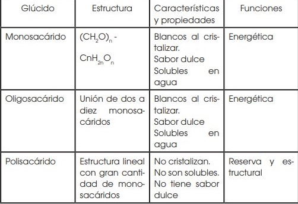

Libros Resueltos de Biologia de 1 BGU
Respuesta de Actividades del Libro de Biologia 1 BGU
Elija la Unidad:
UNIDAD #0: LA VIDA.
1. Observa la siguiente fotografía que corresponde al tejido nervioso.
a. Busca información y explica alguna característica de las células que constituye el tejido nervioso.Las células del tejido nervioso son de diferentes formas y se encargan tanto de recibir y transmitir los impulsos nerviosos, como de actuar como mecanismos de sostén, nutrición y defensa para la neurona
b. Explica la función de este tejido.
Este tejido tiene la función de captar los estímulos tanto internos como externos y transformarlos en impulsos nerviosos, esto gracias a que los estímulos son detectados, examinados y transmitidos por las células nerviosas. Además, se encarga de coordinar las funciones glandulares, viscerales, motoras y psíquicas del ser humano.
c. Pon ejemplos de su localización en el cuerpo humano.
Cerebro, cerebelo y bulbo raquídeo
2. Clasifica los siguientes órganos y partes del organismo según la función vital en la que intervienen: estómago – ovarios – ojos – corazón – cerebro – hígado – trompas de Falopio – tráquea – riñón – próstata – arteria
Nutrición: estómago, hígado.Relación: ojos, corazón, cerebro, tráquea, riñón, arteria.
Reproducción: ovarios, trompas de falopio, próstata
3. ¿Qué diferencias existen entre la división celular de los organismos unicelulares y los organismos pluricelulares?
En los organismos unicelulares cada división de la célula única produce un nuevo organismo, mientras que en los organismos pluricelulares se requieren muchas secuencias de divisiones celulares para crear un nuevo organismo.
4. Realiza una tabla comparativa que señale las principales diferencias entre la división celular por mitosis y meiosis.
5. Dibuja de forma esquemática las fases de la mitosis y la meiosis prestando especial atención al comportamiento de los cromosomas durante estos procesos.
6. Escribe un ejemplo en el que podamos encontrar en la naturaleza: relaciones intraespecíficas y relaciones interespecíficas.
Intraespecíficas: división del trabajo entre los individuos que integran una población como en el caso de las abejas, creando una dependencia muy estrecha entre todos los individuos.Interespecíficas: el pájaro se alimenta de los animales que lleva el rinoceronte, y este se libera de insectos gracias al pájaro.
7. Crea una red trófica de al menos diez organismos de un ecosistema concreto y señala en ella los distintos niveles tróficos.
UNIDAD #1: ORIGEN DE LA VIDA.
1. Observa un fenómeno natural y somételo al método científico. Por ejemplo: ¿por qué llueve?
La Formación del Arcoíris. Observación: en ocasiones cuando termina de llover, y nos ponemos a contemplar el cielo, podemos ver unas luces de colores en forma de arco; la cual conocemos como arcoíris. Pero no en todas las ocasiones que hacemos esto podemos divisarlo. Hipótesis: un arcoíris es un fenómeno luminoso o espectral se forma debido a que la luz solar choca con las gotas de agua que se encuentran en el aire. De ahí, que este fenómeno solo se puede contemplar cuando llueve (o acaba de llover) y haz algunos rayos de luz solar.Experimentación: para analizar el proceso de la creación del arcoíris podemos realizar dos tipos de experimentos. El primero nos dará una pequeña idea de los que pasa cuando llueve y al mismo tiempo inciden en las gotas de lluvia la luz solar. Mientras que el segundo, se concentra más en la idea de la formación ya apreciación de los colores del arcoíris.
Conclusión: un arcoíris es un fenómeno natural de tipo físico, en el que intervienen las partículas del agua y de luz solar. Cuando las partículas de luz blanca entran en contacto con gotas de agua, se reflejan y dan lugar a que se forme un arcoíris
2. A lo largo de la historia se han aceptado muchas teorías que más tarde se ha comprobado que no eran ciertas. ¿Por qué ocurre esto?
Porque no se siguió un método de experimentación para comprobarlas, sino que se aceptaron como hipótesis3. Comenta el impacto de la aparición de los organismos fotosintéticos sobre el planeta.
Solución. La aparición de organismos fotosintéticos tuvo una gran repercusión sobre el planeta ya que fueron ellos quienes provocaron que la atmósfera tenga un alto contenido en O2 y bajo en CO2 . Esto provocó que los organismos anaerobios se extinguieran o vieran su distribución muy reducida mientras que los organismos aerobios se convirtieron en más aptos evolutivamente hablando. Además, producían energía de forma más rentable, lo que les permitió convertirse en pluricelulares. Por otro lado, el oxígeno en la atmósfera permitió la formación de la capa de ozono, la cual filtra la radiación ultravioleta, lo que permitió a los seres vivos salir del agua y colonizar la superficie terrestre.4. Contesta: Ya has visto anteriormente en qué consiste el método científico. ¿Crees que los experimentos de Redi siguen este método? ¿Por qué?
Sí, ya que sus experimentos siguen una hipótesis y logran demostrarla de forma evidente logrando obtener una conclusión específica.5. Plantea un experimento que cumpla con todos los requisitos del método científico que refute la teoría de la generación espontánea.
Lo primero que hizo fue tomar una especie de sopa de vegetales y hervirla hasta la esterilización (es decir, matar todos los organismos vivos) y luego dejarla expuesta al aire, al cabo de unos días hacían su aparición microorganismos en el caldo de cultivo. Repitió el experimento pero esta vez en un recipiente herméticamente cerrado y dejándolo así. En este recipiente sellado no aparecieron los microorganismos en ningún momento, tal como ocurre con los frascos de Pasteur que todavía se conservan cerrados desde que el realizó el experimento. Esto demostraba que los microorganismos y sus esporas morían en el proceso y que se necesitaba de microorganismos para que apareciera la vida nuevamente. Es decir todo ser vivo proviene de otro ser vivo preexistente (que ya estaba vivo antes) y del cual desciende.6. Explica cómo influye la polaridad de las moléculas de agua en las siguientes propiedades:
• Cohesión y adhesión- Cohesión: Los puentes de hidrógeno hacen mantener de manera muy fuerte a las moléculas, haciendo la cohesión de manera compacta.
- Adhesión: Los puentes de hidrógenos son de nuevo los responsables de esta propiedad, al establecerse entre estos y otras moléculas polares.
• Capacidad calorífica específica elevada
Ahora los puentes de hidrógeno son rotos por el calor que absorbe el agua. El citoplasma acuoso permite la protección de las moléculas orgánicas en los cambios bruscos de temperatura.
• Gran capacidad disolvente
Esta propiedad viene gracias a la formación de puentes de hidrógeno que cuando se unen con otras sustancias, estas se disuelven por las moléculas polares del agua.
7. ¿Por qué el hielo flota sobre el agua líquida?
El hielo flota porque hay más moléculas de agua contenidas en el hielo. La temperatura del hielo predomina por encima de la del agua lo que impide que el hielo se hunda completamente y por su diferencia de densidades.8. Explica qué ocurre si a una solución que tiene un pH 7 se le añade HCl
Si agregamos Ácido Clorhídrico (HCl) a una solución con pH 7:Se producirá la acidificación de la solución y disminuirá el pH.
Esto ocurre porque el pH del Ácido Clorhídrico es menor, debido a la mayor concentración de protones de hidrógeno.
Por otra parte, dependiendo del tipo de solución, se puede producir la desnaturalización de estos componentes modificando sus propiedades químicas.
9. Haz un informe sobre el agua en el que se traten los puntos siguientes:
Importancia: desempeña funciones biológicas.Composición y estructura molecular: el agua está formada por dos átomos de hidrógeno (H) y un átomo de oxígeno (O) unidos mediante sendos enlaces covalentes.
Propiedades: amplio margen de temperaturas en que permanece en fase líquida, anómala variación de la densidad con la temperatura, elevada constante dieléctrica, carácter dipolar, calor específico y calor de vaporización elevados, cohesión, adhesión, capacidad de formación de enlaces de hidrógeno y capacidad de disociación.
Funciones: Distribuye sustancias, modera la temperatura interna de los seres vivos, permite la vida bajo la superficie helada de lagos y océanos, actúa como disolvente y participa en diversas reacciones.
10. El silicio es un elemento con propiedades muy similares al carbono. De hecho, muchos investigadores dedican su trabajo a comprobar si podría existir vida basada en el silicio de una forma similar a la vida que conocemos basada en el carbono. Investiga sobre los puntos a favor y en contra que existen sobre la posibilidad de encontrar o crear vida basada en el silicio y debate esta posibilidad con tus compañeros y compañeras en clase.
Sí, ya que probaría la existencia de vida en otras partes del UniversoUNIDAD #2: BIOMOLÉCULAS ORGÁNICAS Y METABÓLICAS
1. La fórmula de los monosacáridos es (CH2 O)n , donde n es el número de átomos de carbono. Escribe la fórmula molecular de una triosa, una tetrosa, una pentosa, una hexosa y una heptosa.
Triosa: C3 H6 O3Tetrosa: C4 H8 O4
Pentosa: C5 H10O5
Hexosa: C6 H12O6
Heptosa: C7 H14O7
2. Compara las estructuras del almidón, glucógeno, celulosa y quitina. ¿Observas alguna relación entre la estructura y la función de cada glúcido?
Todos están formados por enlaces 1 → 4, se componen por oxígneo, hidrógeno y cumplen funciones de reserva energética
3. Realiza un esquema para clasificar los glúcidos en función de su composición, los glúcidos en función de su composición, características, propiedades y funciones

4. Una cadena de ADN consta de los siguientes nucleótidos: ATTCGCTGCA. Escribe la secuencia complementaria de ADN de esa cadena y la secuencia de ARN en la que se transcribiría.
Secuencia complementaria: TAAGCGACGTSecuencia transcrita: AUUCGCUGCA
5. Compara las funciones de ADN y ARN y explica brevemente qué ácido nucleico consideras el más importante.
6. ¿Qué diferencias existen entre un organismo autótrofo y uno heterótrofo? Un
organismo autótrofo es capaz de producir su propio alimento, mientras que los heterótrofos requieren de otros organismos para obtener sus alimentos. ¿Y entre un organismo fotótrofo y uno quimiótrofo? Pon un ejemplo de cada uno. Los organismos fotótrofos son aquellos que absorben la energía luminosa como fuente de energía para la construcción de materia orgánica, mientras que los quimiótrofos obtienen la energía bajo la forma de materia que al ser oxidada por el ser vivo, suministra energía química.Autótrofo: plantas.
Heterótrofos: leones.
Fotótrofo: bacterias.
Quimiotrofo: plantas
7. ¿Crees que uno de los sistemas de obtención de energía y carbono es mejor que otro? Justifica tu respuesta
No es correcto hablar de que algunos sistemas de obtención de carbono y energía sean mejor que otros. La obtención de energía de los seres vivos esta muy relacionado con el ciclo del carbono, ya que la energía los seres vivos la obtienen mediante el consumo de materia orgánica, en procesos de metabolización, los cuales corresponden a la reutilización de la materia orgánica compuesta de carbono. Mediante este proceso de metabolización tanto los organismos heterotrofos como los organismos autotrofos realizan un intercambio de carbono con la atmósfera, ambos procesos son importantes y no es correcto hablar de que uno sea mejor que otro.UNIDAD #3: EVOLUCIÓN DE LA VIDA.
1. ¿Qué diferencias existen entre la teoría fijista y la teoría catastrofista? — ¿Cuál de las dos justifica la existencia de fósiles? ¿Cómo la justifica?
La teoría fijista no puede explicar la existencia de fósiles, mientras que la catastrofista sí. La justifica explicando que se dio extinciones de algunas especies que coincidieron con las catástrofes descritas en la Biblia2. Explica por qué en la actualidad ni el fijismo ni el catastrofismo están aceptados científicamente. — ¿Qué pruebas aportarías para rebatir ambas teorías?
Porque tienen su origen en la creación divina.3. ¿Por qué la teoría de Lamarck es evolucionista? Solución: Hasta 1809 todas las teorías proponían que las especies existentes habían existido desde la creación y siempre habían sido iguales. Sin embargo, en esa fecha Lamarck propuso una teoría en la que se considera que las especies cambian a lo largo del tiempo en función del ambiente. A esto se le llama evolución y por eso la teoría de Lamarck es evolucionista.
Hasta 1809 todas las teorías proponían que las especies existentes habían existido desde la creación y siempre habían sido iguales. Sin embargo, en esa fecha Lamarck propuso una teoría en la que se considera que las especies cambian a lo largo del tiempo en función del ambiente. A esto se le llama evolución y por eso la teoría de Lamarck es evolucionista.4. ¿Por qué el alargamiento del cuello de las jirafas por el esfuerzo continuado no pasará a sus descendientes? ¿Qué tipos de cambios pueden pasar a los descendientes?
Debido a los cambios sucesivos que se dan por el esfuerzo intencionado de las especies.5. ¿Por qué crees que Darwin tardó tanto en publicar su teoría sobre el origen de las especies?
Debido a que tuvo que esperar años para confirmar que las especies evolucionan con el paso del tiempo para adaptarse a los nuevos ambientes a los que son expuestas6. Enumera al menos seis características que demuestren la variabilidad presente en la especie humana. Procura que alguna de ellas no sea una característica observable a simple vista.
Evolución del cráneo humano, órganos homólogos con primates, morfología de las extremidades de los mamíferos, similitudes en primeras etapas del desarrollo embrionario, similitud a nivel molecular en ADN de otros organismos, porcentaje de aglutinación que se produce al mezclar plasma sanguíneo.7. ¿Cómo explicaría Darwin la evolución de las alas en los pingüinos? Utiliza un esquema como el que aparece en el libro para explicarlo.
El cambio se produjo para que estos pudieran nadar bien.8. Explica las diferencias entre la teoría lamarckista y la teoría de Darwin
Lamarck expuso que los rasgos eran adquiridos únicamente por herencia, mientras que Darwin expuso que los rasgos adquiridos por las especies son adquiridos por adaptación.9. Investiga acerca de los pinzones de Darwin y realiza un cuadro comparativo que represente la forma y tamaño del pico de cada uno, qué come, en qué isla se encuentra y cuáles son los alimentos disponibles en la isla en la que habita.
10. ¿Qué mecanismos generan variabilidad en la población de una especie? Explica brevemente cada uno de ellos
Mutación, selección natural y deriva genética.11. ¿Cómo se explicaría según la teoría sintética la evolución de las alas de los pingüinos? ¿Qué nuevas ideas aporta la teoría sintética respecto con la teoría de Darwin?
Debían ser capaces de adaptarse a las aguas para sobrevivir, por ello, sus alas cambiaron a aletas, ya no eran capaces de volar, pero no era necesario. En su lugar, fueron capaces de alimentarse en el agua, también fueron capaces de caminar erguidos sobre la tierra. Aporta la mutación genética aleatoria como fuente de variación.12. La mula es el animal híbrido resultado del cruce entre una yegua y un asno. Las mulas presentan características híbridas de asno y yegua, pero son estériles. Responde a las siguientes cuestiones:
a. ¿Por qué el asno y la yegua no se consideran de la misma especie?Porque existe una separación física.
b. ¿Por qué no se considera una especie a la mula?
Porque es estéril, por lo cual no puede reproducirse para mantener la especie.
13. Explica las principales diferencias entre la teoría gradualista y la teoría puntualista.
En el puntualismo los cambios se dan de forma brusca en corto tiempo. En el gradualismo los cambios se dan lentamente en un período extendido de tiempo.14. ¿Cómo explica la teoría puntualista la ausencia de fósiles de las formas intermedias?
Debido a que los cambios son de forma brusca, por lo cual no habría variaciones intermedias.15. La teoría de Darwin, ¿era gradualista o puntualista? Justifica tu respuesta
Gradualista, ya que las especies se van adaptando a lo largo del tiempo con variaciones mínimas entre un largo período16. Busca un ejemplo diferente al propuesto por el libro con el que puedas explicar los tres tipos de selección en un ambiente determinado.
Algunos ejemplos en los que podemos explicar los 3 tipos de Selección que se dan dentro de un ambiente son:1- Selección estabilizante: un ejemplo son las poblaciones que son compatibles y que tienen características homogéneas por lo que van a consolidarse como una población única reproduciendose entre sí.
2- Selección diaruptivas, un ejemplo de ésto es cuando empiezan a aparecer distintas variables en el fenotipo y genotipo de los individuos de la población, haciendo que éstos empiecen a reproducirse en 2 o mas grupos con características diferentes, terminando por ramificar la especie.
3- La selección direccional, un ejemplo es cuando aparecen nuevas variables, y una de ellas es favorable y conduce a el cambio de toda la especie.
17. Escoge tres razas de perro e investiga su línea evolutiva para conocer cómo se creó cada raza por selección artificial.
Labradoodle o LabradicheFue creado a partir del cruce entre el Labrador Retriever y el Caniche estándar. Generalmente heredan el tamaño de un labrador, se caracterizan por su carácter amable, con mucha energía.
Pomsky
Fue creado a partir del cruce entre el Husky Siberiano y un Pomerania. Comúnmente, son de carácter amigable y juguetón.
Cockapoo
Fue creado a partir del cruce entre el Cocker Spaniel con un Caniche. Son animales muy inteligentes, amables y leales.
18. En 1997 se encontraron restos fósiles de tres homínidos en la depresión de Afar, en Etiopía. Se determinó que se trataba de individuos de nuestra misma especie y se dataron los fósiles: tenían 160 000 años. ¿Crees que la datación se realizó por el método del 14C? Justifica tu respuesta.
No, ya que tiene un período de tiempo mayor que el que este puede analizar.19. Explica brevemente qué tipo de información nos proporciona el registro fósil y qué problemas presenta su interpretación.
Proporciona información sobre los cambios evolutivos. El problema consiste en que no se dispone de fósiles de todas las especies.Di a qué tipo de órganos pertenecen las siguientes estructuras. Justifica tus respuestas:
• La pata de un pato y la aleta de un pezAnálogos, estructura similar para una función similar.
• La aleta de una ballena y el brazo del ser humano
Homólogos, presentan la misma estructura y diferente función
• La pelvis reducida de los cetáceos
Vestigiales, son órganos que ya no se utilizan
21. En cada uno de estos grupos de tres animales, señala los dos que creas que tendrán un desarrollo embrionario más similar:
a) Cebra y caballo.b) Rana y salamandra.
c) Tiburón y delfín.
22. Fíjate en los embriones finales de la ilustración. Explica las diferencias entre:
• El embrión de humano y el de pezLa cola del embrión se alarga mientras que en el humano se separa.
• El embrión de ave y el de pez
La cabeza del pez se alarga y se mantiene pequeña mientras que la del pájaro aumenta de tamaño.
• El embrión de humano y el de chimpancé
La nariz y la boca del chimpancé son más alargadas que la del humano.
23. El análisis de un fragmento de ADN de cuatro especies actuales distintas muestra las siguientes secuencias:
Cada letra corresponde a un gen diferente. Los genes sombreados son genes mutados. Teniendo en cuenta estos aspectos, responde:a. ¿Qué dos especies son evolutivamente más cercanas?
2 y 4. b. ¿Qué especie se separó antes del resto? Justifica tus respuestas.
4.
24. Enumera las ventajas que aportó la adopción de la postura bípeda.
Tener las manos libres, podían manipular cosas, el cerebro fue evolucionando para poder decodificar los nuevos estímulos que requería el manipular cosas, desarrollando capacidades manuales y de razonamiento.25. Define los siguientes términos: hominización, cultura, bipedismo, capacidad craneal.
Hominización: proceso evolutivo a través del cual una raza de primates dio lugar a la especie humana.Cultura: conjunto de conocimientos e ideas no especializados adquiridos gracias al desarrollo de las facultades intelectuales.
Bipedismo: capacidad para andar sobre las dos extremidades inferiores.
Capacidad craneal: medida del volumen interior del cráneo de los vertebrados quienes poseen, tanto, cráneo como cerebro.
26. Ordena cronológicamente los siguientes cráneos y di a qué especie puede pertenecer cada uno de ellos. Justifica tu respuesta
7: Homo sapiens,4: Homo antecessor,
2: Homo habilis,
1: Australopithecus afarensis,
3: Homo erectus,
5: Homo neanderthanlensis.
UNIDAD #4: CLASIFICACIÓN DE LOS SERES VIVOS
1. Investiga y escribe el nombre científico de diez animales y plantas diferentes; usa las normas fijadas por Linneo.El padre de la taxonomía Carlos Linneo o Carl Von Linné, naturalista sueco publica en 1758 el Systema naturae, en donde presentaba una serie de reglas para designar a las especies.
El nombre científico de los animales y plantas según las normas de Linneo debe cumplir con las siguiente características:
- El nombre científico debe estar compuesto por dos palabras y en latín, en donde la primera se refiere al género de la especie y la segunda al epíteto, es decir, al nombre; para caracterizar a la especie determinada.
- El epíteto se puede referir a alguna característica propio del individuo,planta; bien sea su ubicación, forma en que se organiza el cuerpo y otros.
- Se deben escribir en letra cursiva los nombres científicos; cuando esto no sea posible, la nomenclatura debe estar marcada o resaltada.
- La primera letra del nombre científico debe ser en mayúscula y la del epíteto en minúsculas.
NOMBRE CIENTÍFICOS DE ANIMALES
1.- Aquila chrysaetos (águila real o águila caudal)
2.- Eunectes murinus (anaconda verde o común)
3.- Struthio camelus (avestruz)
4.- Sciurus vulgaris (ardilla roja)
5.- Thunnus thynnus (atún azul o común)
6.- Panthera leo (león)
7.- Panthera tigris (tigre)
8.- Ursus arctos (oso pardo)
9.- Giraffa camelopardalis (jirafa)
10.- Corvus corax (cuervo común)
NOMBRE CIENTÍFICOS DE PLANTAS
1.- Rosa eglanteria (rosa mosqueta)
2.- Populus alba (álamo blanco o común )
3.- Ilex aquifolium (acebo)
4.- Cynara scolymus (alcachofa)
5.- Zea mays (maíz)
6.- Mangifera indica (mango)
7.- Helianthus annuus (girasol)
8.- Laurus nobilis (laurel)
9.- Juglans regia (nogal)
10.- Chamaerops humilis (palmito o palmera enana)
2. Busca información sobre cinco organismos pertenecientes al reino monera e indica su nombre científico, su morfología y su importancia en la vida del ser humano.
Entre las mas importantes para los seres humanos se encuentran:1) Arquea Metanógena: este organismo solo se encuentra en medios anaeróbicos y obtiene su energía de la sintetizan del metano, por lo que tiene una gran importancia ecológica ya que interviene en todos los procesos de degradación y descomposición de la materia.
2)Thiopneutes: son bacterias que utilizan el sulfato para convertirlo en sulfuro y liberarlo a la atmósfera. Son esenciales en los procesos de descomposición.
3) Rhizobiales: estas son bacterias que se encuentran en las raíces de las plantas, fijan el nitrógeno, es decir suministran nitrógeno a las plantas y de esta manera mediante el proceso de excreción las plantas lo librean para el aprovechamiento del resto de los seres vivos.
4)Omnibacteria: son las bacterias más abundantes en la biomasa terrestre, sobretodo en el fondo marino, permiten la fotosíntesis de las plantas marinas que corresponden al principal alimento de las especies.
5)Quimiotrófo: son bacterias que habitan en el fondo del lecho marino donde la corteza terrestre es más delgada, donde se expulsan gases tóxicos provenientes del centro de la Tierra, sintetizan estos gases convirtiéndolos en fuentes aprovechables de energía para los seres vivos.
3. Como has visto, los protoctistas y hongos tienen una gran importancia para el ser humano. Realiza una tabla en la que aparezcan al menos cinco organismos pertenecientes a los reinos protoctista y fungi, el grupo al que pertenecen y su importancia para el ser humano.
Ameba: son parásitos intestinales. ProtistaParamecio: ninguna. Protista.
Euglena: detiene emisiones solares. Protista.
Amanita verna: venenosa. Hongo.
Amanita muscaria: puede ser mortal. Hongo.
4. Investiga sobre el ciclo de vida de briófitos y pteridófitos y compáralos con el ciclo de vida de una planta espermatófita.
Las briófitas solo pueden habitar en suelos húmedos mientras que las espermatófitas pueden habitar en prácticamente cualquier lugar. Las pteridófitas no producen semillas, mientras que en las espermatófitas son las semillas las cuales les permiten propagarse.5. Indica el nombre científico de un organismo de cada uno de los grupos de invertebrados estudiados.
Solución: Por ejemplo:Poríferos: Placospherastra antillensis.
Cnidarios: Chrysaora fuscescens.
Platelmintos: Taenia solium.
Anélidos: Hirudo medicinalis.
Artrópodos: Lycosa tarantula.
Moluscos: Octopus bimaculatus.
Equinodermos: Aquilonastra conandae.
6. Representa, de forma esquemática, un pez, indica las partes de su sistema circulatorio y respiratorio y explica cómo ocurre el intercambio de oxígeno y dióxido de carbono en la sangre a su paso por las branquias
7. Investiga y escribe el nombre científico de un condrictio, un osteíctio, un anuro, un urodelo, un lagarto, una tortuga, una serpiente y un cocodrilo
Condrictio: chondrichthyesosteíctio: osteichthyes,
anuro: chordata
urodelo: caudata
lagarto: lacertilia
tortuga: testudines
serpiente: serpentes
cocodrilo: crocodylidae
8. Investiga y escribe el nombre científico de tres aves y tres mamíferos que pertenezcan a distintos órdenes.
Serpentes, macropus, delphinidae, struthio camelus, trochilidae y aquila chrysaetosUNIDAD #5: BIOLOGIA CELULAR
1. ¿Qué tienen en común todas las células?
Todas tienen un ciclo de vida.
Haz un cuadro comparativo entre la célula procariota y la eucariota.

2. Observa este esquema y contesta razonando:
a. ¿Dónde está el citoplasma? ¿Y la cara externa?
Lo que le recubre y los fosfolípidos en la parte superior.
b. ¿Qué estructuras se señalan con flechas?
Los glúcidos.
c. ¿Qué componente de la membrana no está presente en la ilustración?
Proteínas
3. Deduce de qué modo pueden entrar o salir de una célula estos elementos. Justifica tus respuestas.
Ca2+ : difusión simple,bacteria: fagocitosis,
virus: fagocitosis,
agua: endocitosis,
glucosa: difusión lateral
Na: difusión simple.
4. Compara mediante un cuadro las funciones de un cloroplasto y de una mitocondria
La principal función de las mitocondrias es generar energía para mantener la actividad celular mediante procesos de respiración aerobia. Los cloroplastos es donde se tiene lugar la fotosíntesis.5. Tanto las mitocondrias como los cloroplastos presentan una membrana interna magnificada debido a las numerosas crestas en las mitocondrias y a los tilacoides en los cloroplastos. ¿Qué relación tiene esto con la función que desempeñan estos orgánulos?
Les sirve para el transporte de electrones.6. ¿Cuáles son las funciones del ARN?
El ARN se encarga de formar las cadenas de aminoácidos que a su vez forman las proteínas.7. Coloca el orgánulo estudiando a cada afirmación según corrresponda
• Formado por conjuntos de cinco a diez sáculos membranosos y aplanados llamados dictiosomas.
Aparato de Golgi.
• Fabrica lípidos y los transporta junto con las proteínas por toda la célula.
Retículo endoplasmático liso.
• Conjunto de membranas, túbulos y sáculos conectados entre sí y al núcleo celular.
Aparato de Golgi.
• Se encargan de la respiración celular.
Aparato de Golgi.
8. ¿Qué es la homeostasis? Investiga.
Solución: La homeostasis es un estado de equilibrio del cuerpo de un organismo. Se consigue mediante mecanismos de autorregulación. En el caso del ser humano se deben mantener regulados por ejemplo los niveles de glucosa en sangre, la temperatura interna o la presión arterial9. ¿Cuál es la diferencia entre las vacuolas contráctiles y las vacuolas digestivas?
La contráctil se encarga de eliminar el exceso de agua, mientras que las digestivas se encargan de eliminar el alimento.10. Analiza dos funciones básicas de las vacuolas.
Constituyen reservas de sustancias nutritivas y contribuyen al crecimiento de los tejidos.11. Observa esta fotografías y responde:
a. ¿De qué orgánulos se trata?Citosol.
b. ¿Qué partes se distinguen?
Núcleo, aparato de Golgi, mitocondrias, membrana, retículo endoplasmático.
c. ¿Cuáles son sus funciones en la célula?
Constituye una reserva de materiales y en él se desarrollan diversas reacciones.
12. Explica qué significa la afirmación: «El aparato de Golgi se encuentra morfológicamente y fisiológicamente polarizado».
Tiene dos zonas mutuamente cargadas: cis y trans.13. Explica qué tipos de retículos endoplasmáticos podemos encontrar en una célula y cita las semejanzas y las diferencias entre ellos

14. Este esquema corresponde a una región del citoplasma de una célula eucariota. Obsérvalo con atención, ya que puedes encontrar diferentes procesos celulares.
—Identifica los distintos elementos señalados. Describe el proceso que representa.
ADN, ARN y proteínas. Representa el proceso de la síntesis de proteínas
15. Completa la siguiente tabla sobre las características de los microfilamentos, los microtúbulos y los filamentos intermedios
Di qué tipo de componentes del citoesqueleto pueden observarse en estos casos: microvellosidad intestinal, Microfilamentos.
células en división, microtúbulos.
células ciliadas, microtúbulos.
lámina nuclear. filamentos intermedios.
UNIDAD #6: SISTEMA DIFESTIVO Y NUTRICION
1. Responde: ¿Qué característica del intestino permite incrementar la absorción de nutrientes?
Los jugos digestivos2. Explica, mediante un esquema, el proceso de la digestión de nutrientes.
a. Relaciona cada fase del proceso con el órgano en el que tiene lugar.Masticación, insalivación, deglución, digestión estomacal, digestión intestinal, absorción de nutrientes y producción de heces.
Bolo alimenticio, quimio, quilo. b. Añade al esquema los diferentes nombres que reciben los alimentos según la fase.
3. ¿En qué consiste una exploración endoscópica? ¿Qué aparato se utiliza para realizar esta prueba?
Solución: Una exploración endoscópica (endoscopia) es una prueba médica que permite la exploración de las cavidades internas del cuerpo, principalmente del sistema digestivo. Se realiza gracias a un endoscopio: una cámara con luz unida a un tubo largo y flexible4. Responde: ¿Qué tipo de sustancias se expulsan gracias al sistema excretor? ¿De dónde proceden?
Fluidos corporales (líquido celomático, hemolinfa, sangre), quilo. Proceden del ano y la uretra.5. Explica la función del glomérulo renal y del túbulo renal en la formación de la orina.
Aclaración y filtración del plasma sanguíneo. Modificar la composición del ultrafiltrado6. Explica por qué es beneficioso beber dos litros de agua al día.
Ayuda a poner en funcionamiento los riñones y limpiarlos.7. Si una persona padece una infección urinaria, ¿qué parámetros del análisis de orina aparecerán alterados?
a. ¿Qué parámetros de un análisis de sangre podrían salir alterados en este mismo caso?pH
b. Si una persona padece diabetes, ¿qué parámetros se alterarán en un análisis de orina?
Leucocitos y eritrocitos.
¿Y de sangre?
Leucocitos
8. Explica qué son los nutrientes. —¿En qué se diferencian los nutrientes orgánicos e inorgánicos?
Producto químico procedente del exterior de la célula y que ésta necesita para realizar sus funciones vitales.9. Construye una tabla con los nutrientes orgánicos e inorgánicos en la que consten: características, función, ejemplos de nutrientes y de alimentos donde se encuentran.
Los orgánicos son biomoléculas. Inorgánicos son sales minerales.10. ¿Qué cantidad de energía diaria necesitas aproximadamente cuando estás estudiando? Exprésala en calorías y en kilocalorías.
Mujeres: 2868 kcal o 2868000 calHombres: 3405 kcal o 3405000 cal.
11. Según la gráfica superior, ¿por qué crees que durante la infancia y juventud aumentan tan rápido las necesidades energéticas?
Nuestras necesidades energéticas varían según nuestras actividades cotidianas, que ha medida de que vamos creciendo se hacen más demandantes, es decir, vamos haciendo más cosas a lo largo del día.Cada vez que requiramos más energía necesitamos comer y recibir nutrientes para mantener nuestras funciones básicas de forma óptima, ya que cada vez con la actividad física y a lo largo de las horas la energía se va consumiendo.
Según la gráfica puedo observar que cuando ya un niño tiene un año y puede caminar comienza el aumento de las necesidades energéticas, lo cual seguirá aumentando con el largo de los años.
12. Sabiendo cuáles son los nutrientes más importantes de cada grupo de alimentos, explica la función principal de cada grupo.
Grupo 1: función plástica, con alto valor proteínico.Grupo 2: función plástica y aportan proteínas, hierro y vitaminas.
Grupo 3: doble función, plástica y energética, ya que son ricos en hidratos de carbono, alto contenido en fibra y proteínas de origen vegetal.
Grupo 4: función reguladora y son ricas en vitaminas, minerales, fibra y oligoelementos.
Grupo 5: función reguladora.
Grupo 6: función energética. Aportan calorías, carbohidratos y vitaminas.
Grupo 7: función energética, ricos en vitaminas liposolubles.
13. Di a qué grupo pertenecen los siguientes alimentos:
– tomates(4)– queso (1)
– aceite de girasol (7)
– pollo (2)
– plátanos (5)
– macarrones (6)
– papas (3)
– lentejas (3)
– chocolate.(7)
14. ¿Qué significa que la producción agrícola y ganadera sea intensiva? Explica las diferencias entre este tipo de producción y una producción tradicional.
Al ser intensiva se producen gases contaminantes en exceso y mayor cantidad de desechos, además de alterar tanto flora como la fauna.15. Explica las diferencias y semejanzas entre la refrigeración y la congelación, y la pasteurización y la esterilización.
Mediante refrigeración los alimentos se mantienen unos días, mientras que en congelación puede mantenerse por meses.En la pasteurización se inactivan los microorganismos, mientras que en la esterilización se pierde las propiedades de los alimentos.
16. ¿Qué son los aditivos?
Son sustancias que se añaden a los alimentos sin cambiar su valor nutritivo. ¿Crees que es necesaria su utilización? Justifica tu respuesta No, porque no aportan nutrientes.17. Investiga el proceso de envasado, transporte y almacenaje que debe seguir algunos productos que exporta Ecuador, desde que se recolectan hasta que llegan a los comercios extranjeros.
El envasado consiste en cualquier recipiente que directa e indirectamente esta en contacto con el producto final, para protegerlo y conservarlo, facilitando su manejo, transportación, almacenamiento y distribución.Los empaques tienen unos requisitos estructurales que deben seguir para que cumplan optimamente con su función: deben contener el producto en envases proporcionales al producto.El envase debe ser compatible con el producto, que no lo contamine. El envase debe retener o conservar todos los atributos del producto y por ultimo debe ser practico, tanto para su traslado como para practico para su consumo.
Transporte y almacenaje, estos son muy variados dependen exclusivamente de las características del producto.
18. Explica las ventajas de consumir frutas y verduras frescas de producción local
Los alimentos no se encuentran con sustancias químicas para preservarlas, y se apoya a la economía local.19. ¿Qué significa tener una dieta sana, equilibrada y variada?
Comer saludablemente, ingiriendo todos los alimentos de la tabla alimenticia en raciones moderadas diariamente20. Explica por qué en la base de la pirámide alimentaria se encuentran alimentos de los grupos 3 y 6. —¿Por qué el aceite y el azúcar se encuentran en la cúspide de la pirámide?
Porque estos aportan energía al organismo. Porque son sustancias que proporcionan energía, pero no son estrictamente necesarias.21. Analiza tu dieta de un día y cuenta las raciones que ingieres de cada grupo de alimentos. Compara el resultado con los datos de la tabla de esta misma página, donde se determinan las raciones que constituyen la dieta equilibrada de una persona según su peso.
—Comprueba si tu dieta es equilibrada y, en el caso de que no lo sea, di qué deberías cambiar para que lo fuera.No lo es, debo de comer menos comida grasosa y hacer mas ejercicio.
22. Pregunta a una compañera y a un compañero de clase qué tipo y cantidad de alimentos consumieron el día anterior.
a.Elabora una tabla en la que consten los grupos de alimentos, el tipo de alimento y la cantidad consumida, las raciones consumidas y las recomendadas.b.De cada ficha, valora si la dieta es equilibrada o no y en el caso de que no lo sea, di cuáles son los desequilibrios que presenta
Los lacteos pueden variar dependiendo el tipo de persona de lo demas, esta bien.
23. Explica qué consecuencias pueden tener las irregularidades en la dieta que suelen producirse en la adolescencia.
Pueden provocar aumento y disminución bruscos de la masa corporal.
24. ¿En qué consiste la dieta mediterránea? —¿Qué ventajas ofrece la dieta mediterránea?
En la combinación de alimentos frescos, locales y de temporada.Que al estar frescos los alimentos no se encuentran contaminados ni han perdido su valor nutricional.
25. Construye una tabla con las características, los síntomas y el tratamiento de los trastornos en la alimentación que hemos explicado.

26. Haz una lista con los países en los que, según el mapa de la página anterior, el consumo de alimentos está por debajo de las necesidades nutricionales.
—Razona qué factores dificultan la producción y el reparto de alimentos en estos países.África, Asia, Sudamérica. Mayor exportación que consumo local.